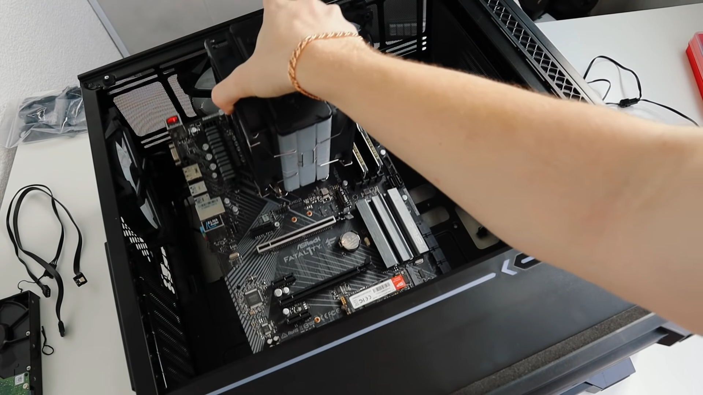
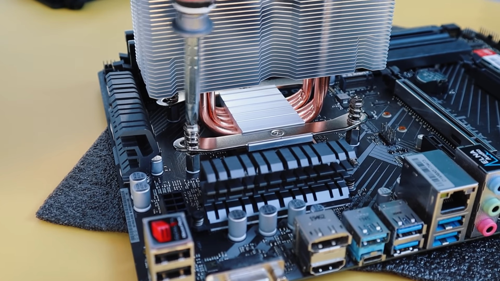
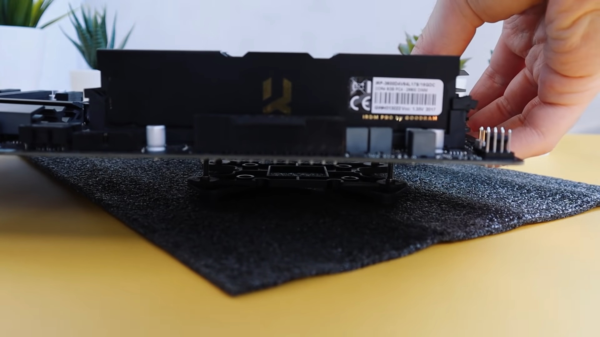

Сборка компьютера
Корпус (на ваш выбор)
Материнская плата (подходящая к корпусу по размерам)
Процессор (подходящий к материнской плате)
Блок питания (которого будет достаточно для питания системы)
Оперативная память (подходящая к процессору и материнской плате)
Жесткий диск (желательно SSD)
Элементы охлаждения (кулер для процессора и вентиляторы в корпусе)
По желанию какие-либо адаптеры (например Wi-Fi адаптеры)
Видеокарта (если процессор не имеет встроенного видеоядра или Вы собираете компьютер для игр)
Рекомендуем воспользоваться Конфигуратор ПК
Внимание, цена может отличаться от цен, где Вы будете покупать комплектующие, а так же Вы в праве выбрать другой Конфигуратор ПК Шаг №1
Подготовьте рабочее место:
Для сборки системного блока вам точно понадобятся две крестовые отвертки с разным диаметром шлица, нейлоновые стяжки и кусачки. Возможно, пригодятся пассатижи — в дешевых корпусах резьбу нарезают на глаз, а также двухсторонняя клейкая лента, обезжиривающая жидкость и ватные палочки. Шаг №2 В руководстве пользователя материнской платы всегда присутствует описание установки всех основных компонентов и разъемов. Новички, держите эту книжку при себе. Последовательность выполнения шагов по сборке системного блока может меняться в зависимости от типа комплектующих. Например, иногда процессорный кулер лучше установить сразу же, а иногда — в предпоследнюю или последнюю очередь. Еще до закрепления материнской платы в корпусе следует установить центральный процессор и оперативную память в соответствующие гнезда. Установка по ключ Обратите внимание, что все центральные процессоры и материнские платы оснащены указателями и так называемой защитой от дурака. В принципе, вы не сможете установить чип в гнездо иным способом, поэтому при сборке компьютера НИКОГДА не применяйте силу. Защитой от неправильного подключения оснащены все элементы в системном блоке. Помимо центрального процессора, вы не сможете подключить каким-то иным образом кабели блока питания, корпусные разъемы, вентиляторы, дискретные устройства, накопители и оперативную память. Точнее, сможете, но для этого потребуется приложить максимум усилий. Думаю, о последствиях неправильной установки компонентов ПК лишний раз говорить не стоит. После центрального процессора в слоты DIMM,расположены обычно с правой стороны(Зависит от модели Материнской платы), установите оперативную память. В некоторых материнских платах их может всего два или три модуля. ОЗУ фиксируются при помощи защелок(Вы услышите приятный звук),по краям слотов DIMM. В некоторый материнских платах такие защёлки расположены только на одной стороне разъёмов ОЗУ
Это сделано например для того чтобы можно было без проблем менять модули ОЗУ. Важно! Термопасту нужно наносить тонким слоем, не нужно её "наваливать" кучей. Если у Вас СВО (Система водяного охлаждения), прочитайте инструкцию о СВО, для Вашей материнской платы.Рекомендуется установить СВО после подготовки материнской платы в корпус Вентиляторы кулера и корпуса подключаются к материнской плате при помощи 3- и 4-контактных разъемов. Количество таких портов никак не регламентируется, но минимум два разъема на плате должны присутствовать: для подключения вентилятора CPU-кулера и для системной (корпусной) крыльчатки. Все коннекторы маркируются соответствующим образом: CPU_FAN, SYS_FAN (или CHA_FAN). Иногда 4-контакнтный разъем, предназначенный для процессорного охладителя, выделяют другим цветом (чаще всего белым). А еще в платах среднего и высокого ценовых диапазонов можно встретить коннектор PUMP_FAN. Он предназначен для подключения ротора помпы водяного охлаждения, но в то же время подходит и для любых других вентиляторов. Просто через этот порт передается ток большей силы. Шаг №3 Шаг №4 Установка Блока питания осуществляется кулером вниз! Шаг №5 Задняя планка Установка материнской платы начинается с закрепления заглушки I/O-панели в специально отведенном для этого прямоугольном отверстии. Никаких сложностей у вас не возникнет. Заглушка всегда идет в комплекте вместе с материнской платой. Шаг №6 Установка материнской платы в корпус  Материнскую плату закрепляем крипежом в комлекте Шаг №7 Установка жёсткого диска Современные платформы AMD и Intel позволяют установить несколько типов накопителей. В продаже вы легко найдете SSD с интерфейсами SATA 6 Гбит/с и PCI Express.Жесткие диски форм-фактора 3,5’’ в Cooler Master MasterBox 5 MSI Edition удобно устанавливать в корзину. Пластиковые салазки оснащены системой безвинтового крепления, а также имеют антивибрационные шайбы. Сюда же могут быть помещены и 2,5-дюймовые запоминающие устройства, но в таком случае придется дополнительно поработать отверткой.
SSD с разъемом SATA 6 Гбит/с и компактные HDD, подключаемые к материнской плате при помощи гибкого кабеля, крепятся в том числе и к разделительной стенке. Выглядит подобное решение весьма привлекательно. На каждый накопитель приходится по четыре винта. Подключаем кабеля Шаг №8 Подключение кабелей Пожалуй самая сложная работа это подключение кабелей На картинках показаны основные провода для подключения, если Вашего провода неоказалось то принцип тоже самое Шаг №9 Установка видеокарты Шаг №10
Установка процессора и оперативной памяти
Большинство современных процессоров AMD и Intel имеют двухканальные контроллеры оперативной памяти. Поэтому в материнских платах и используется либо два, либо четыре слота DIMM. Рекумендуется же ставит либо два, либо четыре модуля ОЗУ (Оперативная память).
 После установки ЦП и ОЗУ вы можете сразу же установить процессорный кулер, но только если в его конструкции используется радиатор небольшого размера. Применение габаритной системы охлаждения затруднит монтаж материнской платы, а также последующее подключение проводов.
После установки ЦП и ОЗУ вы можете сразу же установить процессорный кулер, но только если в его конструкции используется радиатор небольшого размера. Применение габаритной системы охлаждения затруднит монтаж материнской платы, а также последующее подключение проводов.
Кулеры для платформ AMD AM3+ и FM2+ крепятся при помощи пластиковых «ушей» — за них цепляется специальная металлическая скоба с проушинами. Боксовое охлаждение для чипов Ryzen устанавливается иначе, здесь придется поработать отверткой: сначала снять пластиковое крепление, а затем прикрутить радиатор к бекплейту. Кулер для процессоров Intel крепится при помощи пластмассовых клипс: устанавливаете радиатор на ЦП и нажимаете на защелку, пока не услышите характерный щелчек. В общем, в случае с установкой боксовых систем охлаждения проблем даже у новичков возникнуть не должно.

На подошву некоторых кулеров уже нанесена термопаста — ее применение заметно увеличивает эффективность отвода тепла от CPU. В любом случае термопаста всегда идет в комплекте с процессорным охладителем. Например, вместе с Cooler Master MasterLiquid 120 шел небольшой тюбик, которого тем не менее должно хватить на 3-4 раза. Пожалуйста, не забудьте снять защитную пленку перед установкой системы охлаждения, если таковая имеется на основании устройства.
Перед нанесением рекомендуется обработать процессор спиртом
Также надо установить:
 Разъем от кулера процессора подключаем в порт FAN на материнской плате
Разъем от кулера процессора подключаем в порт FAN на материнской плате
Радиатор от СВО, можно установить вверху корпуса.
При нехватке разъемов для подключения корпусных вентиляторов помогут всевозможные переходники. Это может быть обычный разветвитель, позволяющий подключить к одному 3- или 4-контактному порту сразу несколько крыльчаток. Или же кабель, подключаемый к разъему MOLEX или SATA.
Установка SSD


Даже если у Вас на бп есть подсветка.
В корупусе может быть расположение бп вверху, но всеё равно принцип установки такой же.


.jpg)